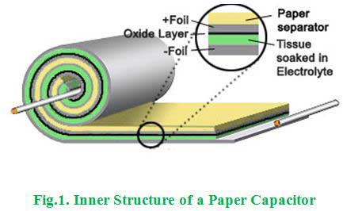

- An electrolytic capacitor can be used for
The electrolytic capacitors can be used in DC only because it is a polarized capacitor. There is a clear marking of the polarity (positive and negative) at the terminal point. We cannot used this capacitor in AC power supply because the electrolytic oxide material works in very low frequency power supply (nearly to be zero). If there is any incorrect polarization or presence of AC supply, the insulated oxide layer will break down very soon and it causes permanent damage as a result.
- A capacitor consists of
The basic construction of the capacitor is that consists of two parallel metal plates separated by an insulating material or the dielectric material. For example, air capacitors are made with air as the dielectric in between the two metal plates or conductors.
- Which capacitor will be physically smaller for the same ratings?
The dielectric strength of ceramic material is very high than the paper dielectric material. Hence, the dielectric strength and the dimension are inversely proportional. That means the higher dielectric material occupies less space to produce the required rating than the other materials. So, the physical size of the ceramic capacitor is less for the same rating than the paper capacitor.
- A papercapacitor is usually available in form of
Paper capacitors are made of paper or oil-impregnated paper and aluminum foil layers rolled into a cylinder as shown in below figure.
 - A capacitor in a circuit became hot and ultimately exploded due to wrong connection, which type of capacitor it could be ?
The electrolytic capacitors are Polarized. So, when the DC voltage applied to the capacitor, the terminals must connect with the correct polarity, i.e. positive power supply to the positive terminal and negative power supply to the negative terminal. If there is any incorrect polarization, the insulating oxide layer will break down very soon and it causes permanent damage as a result.
- A ceramic and a mica capacitor have the same physical dimension. Which has the higher value of capacitance ?
Mica material has a dielectric strength of 5000 KV per inch. This is greater than the ceramic material. At the same physical dimensions of both two materials due to the difference in dielectric strength, the mica capacitor has the higher value of capacitance than the ceramic capacitor because the dielectric strength and the capacitance are directly proportional to each other.
- A condenser suitable for DC only is
The polymer aluminium electrolytic condenser is a polarized capacitor that can be worked only in DC supply and the charging and discharging characteristics are very good than the other above mentioned capacitors. Hence, it is suitable for DC power supply.
- Which of following capacitors preferred for high frequency circuits?
Mica capacitors have low resistive and inductive components associated with it. Hence, they have high Q factor and because of high Q factor their characteristics are mostly frequency independent, which allows this capacitor to work at high frequency.
- ________________ capacitors are used in transistor circuits.
The ceramic capacitor has the special characteristics that the capacitor only transmits AC components and does not transmit DC components, and it is used to extract AC components from DC + AC components. As the operating conditions of transistors, ICs and other active elements in the circuits, it is necessary to extract only the required AC signal after setting the optimal operating conditions for each circuit. That is why the ceramic capacitors are used in transistor circuits.
- Which of the following capacitors can be used for temperature compensation?
The low permittivity of ceramic capacitors can be made to exhibit zero temperature coefficient and this characteristics helps in temperature compensation in networks.
- Which of following material has least value of dielectric constant?
The dielectric constant is the ratio of the permittivity of a substance to the permittivity of free space. The permittivity value of oil is less than the other above mentioned materials. Hence, the dielectric constant is less for oil.
- A mica capacitor and a ceramic capacitor both have the same physical dimensions. Which will have more value of capacitance ?
Mica material has a dielectric strength of 5000 KV per inch. This is greater than the ceramic material. At the same physical dimensions of both two materials due to the difference in dielectric strength, the mica capacitor has the higher value of capacitance than the ceramic capacitor because the dielectric strength and the capacitance are directly proportional to each other.
- For closer tolerance which of the following capacitors is usually preferred?
The flow of electrons in a dielectric medium causes the voltage variation in it by charging and discharging principle. During the working time, the voltage variation affects the value of capacitance. The amount of capacitance variation with change in voltage is known as tolerance of a capacitor. In mica, the change in capacitance with the voltage change is less always in nature. Hence, the tolerance value of mica capacitor is less than other above mentioned type.
- Mica capacitor are characterised by all of following except
Internal construction of the mica capacitor has direct contact to the electrodes on both ends. This contact keeps all electric current paths very short. The design behaves like a large number of individual capacitors are connected in parallel, thus reducing the internal ohmic losses. This results in low ohmic losses and a low leakage reactance. Hence, the mica capacitor is not characterized by this low leakage reactance because it is always low.
- Paper condenser is
There is no electrolytic oxide for making the dielectric medium because oil impregnated paper between the metallic plates can act as a dielectric medium. So, it is not an electrolytic capacitor. Once the fabrication process is done in the paper condenser, then we cannot be able to change the value of capacitance. So, it is usually a fixed value capacitor.
- Which of following capacitors has relatively shorter shelf life?
The electrolytic capacitors have less shelf life, due to the following chemical reactions. If the electrolytic capacitor is exposed to high temperature atmosphere, sealing material can be degraded to lower sealing power and electrolyte can be lost due to dissipation. When aluminum electrolytic capacitor is stored the charge for a long time without electric input, leakage electric current may increase and capacitance may decrease. One of the reasons why leakage electric current increases is the penetration of electrolyte into defects in the place of the oxide film’s diffusion of oxygen and it may consume bulk electrolyte.
- The breakdown voltage for paper capacitor is usually
- Which of following capacitor will have least value of breakdown voltage?
The dielectric strength of the electrolytic acid is very less than the other type of dielectric materials. Hence, it has least value of breakdown voltage.
- Which of the following capacitors is marked for polarity?
The electrolytic capacitors are worked in only DC power supply. So, the polarity has marked near the terminal ends of the electrolytic capacitor.
- A gang condenser is a
The gang condenser is nothing but the availability of the number of single capacitors that might be connected depends on the requirement. Whenever we need to have more capacitance, then the capacitors can be connected in parallel one by one. So, it is a variable capacitor. Usually, this type of capacitors is used in power factor correction.
Design with  by SARU TECH
by SARU TECH
www.sarutech.com
Content Credited to electrical4u.com
Online Electrical Engineering Study Site